Introduction: Simulink Modeling
In Simulink, it is very straightforward to represent and then simulate a mathematical model representing a physical system. Models are represented graphically in Simulink as block diagrams. A wide array of blocks are available to the user in provided libraries for representing various phenomena and models in a range of formats. One of the primary advantages of employing Simulink (and simulation in general) for the analysis of dynamic systems is that it allows us to quickly analyze the response of complicated systems that may be prohibitively difficult to analyze analytically. Simulink is able to numerically approximate the solutions to mathematical models that we are unable to, or don't wish to, solve "by hand."
In general, the mathematical equations representing a given system that serve as the basis for a Simulink model can be derived from physical laws. In this page we will demonstrate how to derive a mathematical model and then implement that model in Simulink. This model is then employed in the Introduction: Simulink Control page in order to demonstrate how to employ Simulink to design and simulate the control for a system.
Contents
Train system
In this example, we will consider a toy train consisting of an engine and a car. Assuming that the train only travels in one dimension (along the track), we want to apply control to the train so that it starts and comes to rest smoothly, and so that it can track a constant speed command with minimal error in steady state.
The mass of the engine and the car will be represented by 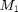 and 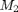, respectively. Furthermore, the engine and car are connected via a coupling with stiffness 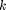. In other words, the coupling is modeled as a spring with a spring constant . The force 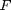 represents the force generated between the wheels of the engine and the track, while represents the coefficient of rolling friction.

Free-body diagram and Newton's second law
The first step in deriving the mathematical equations that govern a physical system is to draw the free-body diagram(s) representing the system. This is done below for our train system.

From Newton's second law, we know that the sum of the forces acting on a body is equal to the product of the mass of the body and its acceleration. In this case, the forces acting on the engine 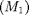 in the horizontal direction are the spring force, the rolling resistance, and the force generated at the wheel/track interface. The forces acting on the train car 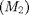 in the horizontal direction are the spring force and the rolling resistance. In the vertical direction, the weight forces are balanced by the normal forces applied by the ground 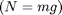. Therefore, there will be no acceleration in the vertical direction.
We will model the spring as generating a force that is linearly proportional to the deformation of the spring, 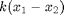, where 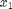 and  are the displacements of the engine and car, respectively. Here it is assumed that the spring is undeformed when and equal zero. The rolling resistance forces are modeled as being linearly proportional to the product of the corresponding
velocities and normal forces (which are equal to the weight forces).
are the displacements of the engine and car, respectively. Here it is assumed that the spring is undeformed when and equal zero. The rolling resistance forces are modeled as being linearly proportional to the product of the corresponding
velocities and normal forces (which are equal to the weight forces).
Applying Newton's second law in the horizontal direction based on the above free-body diagrams leads to the following governing equations for the train system.
(1)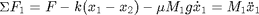
(2)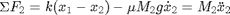
Constructing the Simulink model
This set of system equations can now be represented graphically without further manipulation. Specifically, we will construct two copies (one for each mass) of the general expression or 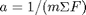. First, open Simulink and open a new model window. Then drag two Sum blocks (from the Math Operations library) into your model window and place them approximately as shown in the figure below.

The outputs of each of these Sum blocks represents the sum of the forces acting on each mass. Multiplying each output signal by 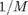 will give us the corresponding acceleration of each mass. Now drag two Gain blocks (from the Math Operations Library) into your model and attach each one with a line from the output of one of the Sum blocks. Label these two signals as "Sum_F1" and "Sum_F2" in order to make your model more clear. This is accomplished by double-clicking in the space above each of the two signal lines and entering the desired label.

These Gain blocks should contain for each of the masses. We will define the variables M1 and M2 in the MATLAB workspace, so we can just enter the corresponding variable names in each of the Gain blocks. Double-click on the upper Gain block and enter "1/M1" into the Gain field. Similarly, enter "1/M2" in the Gain field of the second Gain block.
You will notice that the gains did not appear in the image of the Gain blocks, rather the blocks display a value of -K-. This is because the blocks are too small on the screen to show the full variable name inside the triangle. The blocks can be resized so that the actual gain value can be seen. To resize a block, select it by clicking on it once. Small squares will appear at the corners. Drag one of these squares to stretch the block. Your model should appear as below.

The outputs of these gain blocks are the accelerations of each of the masses (the train engine and car). The governing equations we derived above depend on the velocities and displacements of the masses. Since velocity can be determined by integrating acceleration, and position can be determined by integrating velocity, we can generate these signals employing integrator blocks. Drag a total of four Integrator blocks from the Continuous library into your model, two for each of our two accelerations. Connect these blocks and label the signals as shown below. Specifically, the first inegrator takes the acceleration of mass 1 ("x1_ddot") as an input and generates the velocity of mass 1 ("x1_dot"). The second integrator then takes this velocity and outputs the displacement of the first mass ("x1"). The same pattern holds for the integrators for the second mass.

Now, drag two Scopes from the Sinks library into your model and connect them to the outputs of these integrators. Label them "x1" and "x2".

Now we are ready to add the forces acting on each mass. First, we need to adjust the inputs on each Sum block to represent the proper number of forces (we will worry about the signs later). Since there is a total of three forces acting on mass 1, double-click on the corresponding Sum block and change the List of signs field to "|+++". The symbol "|" serves as a spacer. There are only 2 forces acting on mass 2, therefore, we can leave that Sum block alone for now.

The first force acting on mass 1 is just the input force, . Drag a Signal Generator block from the Sources library and connect it to the uppermost input of the corresponding Sum block. Label this signal as "F".

The next force acting on mass 1 is the rolling resistance force. Recall that this force is modeled as follows.
(3)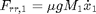
To generate this force, we can tap off the velocity signal and multiply by an appropriate gain. Drag a Gain block into your model window. Tap off the "x1_dot" signal and connect it to the input of this new Gain block (draw this line in several steps if necessary). Connect the output of the Gain block to the second input of the Sum block. Double-click the Gain block and enter "mu*g*M1" into the Gain field. The rolling resistance force, however, acts in the negative direction. Therefore, change the list of signs of the Sum block to "|+-+". Next, resize the Gain block to display the full gain and label the output of the Gain block "Frr1". Your model should now appear as follows.

The last force acting on mass 1 is the spring force. Recall that this force is equal to the following.
(4)
Therefore, we need to generate a signal 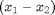 which we can then be multiplied by a gain to create the force. Drag a Subtraction block (or a Sum block or an Addition block) below the rest of your model. In order to change the direction of this block, right-click on the block and choose Format > Flip block from the resulting menu. Alternatively, you can select the block then hit Ctrl-I. Now, tap off the "x2" signal and connect it to the negative input of the Subtract block. Also, tap off the "x1" signal and connect it to the positive input. This will cause signal lines to cross. Lines may cross, but they are only actually connected where a small block appears (such as at a tap point).

Now, we can multiply this difference by the spring constant to generate the spring force. Drag a Gain block into your model to the left of the Subtraction block. Change the value of the Gain block to "k" and connect the output of the Subtract block to its input. Then connect the output of the Gain block to the third input of the Sum block for mass 1 and label the signal "Fs". Since the spring force acts on mass 1 in the negative direction, it is necessary to again change the list of signs of the Sum block to "|+--". Your model should appear as follows.

We can now apply forces to mass 2. For the first force, we will use the same spring force we just generated, except that it is applied to mass 2 in the positive direction. Simply tap off the spring force signal "Fs" and connect it to the first input of the Sum block for mass 2.

The last force applied to mass 2 is its rolling resistance force. This force is generated in an analogous manner to the rolling resistance force applied to mass 1. Tap off the signal "x2_dot" and multiply it by a Gain block with value "mu*g*M2". Then connect the output of the Gain block to the second input of the corresponding Sum block and label the signal "Frr2". Changing the second input of the Sum block to be negative will lead to the following model.

Now the model is complete. We simply need to supply the proper input and define the output of interest. The input to the system is the force generated by the engine. Within the Simulink model, we have already defined the force to be the output of a Signal Generator block. The output of the system, which we will observe and ultimately try to control, will be the velocity of the train engine. Add another Scope block to your model from the Sinks library. Tap a line from the "x1_dot" signal and connect it to the Scope block. Label this scope as "x1_dot" and your model should appear as in the following.

Now, the model is complete and should be saved. You can also download the completed model here.
Running the model
Before running the model, we need to assign numerical values to each of the variables used in the model. For the train system, we will employ the following values.
- = 1 kg
- = 0.5 kg
- = 1 N/sec
- = 1 N
- = 0.02 sec/m
- 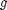 = 9.8 m/s^2
Create a new m-file and enter the following commands.
M1 = 1; M2 = 0.5; k = 1; F = 1; mu = 0.02; g = 9.8;
Execute your m-file in the MATLAB command window to define these values. Simulink will recognize these MATLAB variables for use in the model.
Now, we need to give an appropriate input to the engine. Double-click on the Signal Generator block (outputs "F"). Select square from the Wave form drop-down menu and set the Frequency field to equal "0.001". You may leave the Units as the default Hertz. Also enter "-1" into the Amplitude field (positive amplitude steps negative before stepping positive).
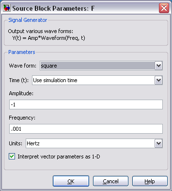
The last step before running the simulation is to select an appropriate simulation time. To view one cycle of the 0.001 Hz square wave, we should simulate the model for 1000 seconds. Select Parameters from the Simulation menu at the top of the model window and change the Stop Time field to "1000". Close the dialog box.
Now, run the simulation and open the "x1_dot" scope to examine the velocity output (hit autoscale). The input was a square wave with two steps, one positive and one negative. Physically, this means that the engine first went forward, then backward. The velocity output reflects this.
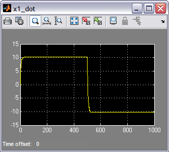
In this page we derived the mathematical model for the train system from first principles and then represented the derived equations within Simulink. An alternative option that is now available is to represent a dynamic system employing the physical modeling tool Simscape. Simscape is an addition to Simulink that allows a user to model a system employing blocks that represent physical quantities (and objects) such as inertias and joints, or resistances and inductors. Employing Simscape allows the user to simulate a physical system without deriving the governing mathematical equations.
Continuing on to the Introduction: Simulink Control page, we will employ the model derived in this page to demonstrate how to use Simulink to design the control for our train system.